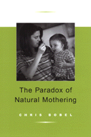

An intimate view of the family next door
An intimate view of the family next door


 An intimate view of the family next door
An intimate view of the family next door

|  |
The Paradox of Natural MotheringChris Bobelpaper EAN: 978-1-56639-907-4 (ISBN: 1-56639-907-6) |
"Motherhood in America is a paradox—sentimentalized—devalued at once. The 'natural mothers' Bobel researched show us not just their particular resolutions of the paradox, but clarify the larger problems of mothering in this difficult world. Bobel has made a wonderful contribution to our understanding of American motherhood in all its forms."
—Barbara Katz Rothman, Professor of Sociology, CUNY and author of Recreating Motherhood
Single or married, working mothers are, if not the norm, no longer exceptional. These days, women who stay at home to raise their children seem to be making a radical lifestyle choice. Indeed, the women at the center of The Paradox of Natural Mothering have renounced consumerism and careerism in order to reclaim home and family. These natural mothers favor parenting practices that set them apart from the mainstream: home birth, extended breast feeding, home schooling and natural health care. Regarding themselves as part of a movement, natural mothers believe they are changing society one child, one family at a time.
Author Chris Bobel profiles some thirty natural mothers, probing into their choices and asking whether they are reforming or conforming to women's traditional role. Bobel's subjects say that they have chosen to follow their nature rather than social imperatives. Embracing such lifestyle alternatives as voluntary simplicity and attachment parenting, they place family above status and personal achievement. Bobel illuminates the paradoxes of natural mothering, the ways in which these women resist the trappings of upward mobility but acquiesce to a kind of biological determinism and conventional gender scripts.
Excerpt available at www.temple.edu/tempress
"Chris Bobel, an associate professor of women's studies at the University of Massachusetts, takes a sociologist's eye and a feminist's heart to her study of a certain kind of parenting in The Paradox of Natural Motherhood. Through case studies of five women and interviews with dozens more, Bobel explores (admiringly and critically) how modern women can make seemingly old-fashioned choices to be full-time moms, to home-school their children or to practice alternative medicine."
—Publishers Weekly
"Through respectful interviews and thoughtful analysis, Chris Bobel has produced a an intriguing study of mothers who engage in home schooling, alternative health care and other 'natural' maternal practices for the sake of their children and in the hope bringing about political change. A fascinating and disturbing book."
—Sara Ruddick, author of Maternal Thinking: Toward a Politics of Peace
"With insight and passion, Chris Bobel shows how 'natural mothers' struggle to justify choices that may seem rebellious but are nevertheless socially constructed. By uncovering the paradoxes facing those who adopt traditional definitions of motherhood as most women search for ways to balance family life with pursuits outside the home, she illuminates the tensions, contradictions, and limitations facing all contemporary women. This is a finely crafted, timely, and fascinating study."
—Kathleen Gerson, Professor and Chair, Department of Sociology, New York University and author of Hard Choices: How Women Decide About Work, Career, and Motherhood.
"This is a well written, insightful and in-depth exploration of natural mothering. The reconciling of natural mothering with feminism is just one of many fascinating themes discussed by author Chris Bobel."
—Linda Breen Pierce, author of Choosing Simplicity: Real People Finding Peace and Fulfillment in a Complex World
"In addition to providing a first-rate ethnographic account of women who have embraced devotion to family, The Paradox of Natural Mothering uses feminist theory as a bridge to social movement theory to reveal the political implications of the identity-oriented and embodied strategies used by many activist groups attempting to redefine dominant constructions of femininity and masculinity. This engaging, insightful, and compassionate book is a must read for students of gender and social movements."
—Verta Taylor, Ohio State University
"Bobel has created an in-depth and piercing portrait of women who have seemingly sacrificed everything for the good of their families. Titled 'The Paradox of Natural Mothering,' Bobel's book examines this lifestyle with a critical eye, beginning with a definition of it and a description of its origins and ending with her own uneasy brush with this idealized form of mothering. Paradox is a sociological study, but it's never dry reading. Bobel uses her subjects' own words to deliver a lively description of this social/cultural phenomenon."
—The Capital Times (Madison, WI)
Acknowledgments
1. Introduction: Five Women, Five Stories
2. Female Moral Reform and the Maternal Politics of Accommodation
3. A Closer Look: The Ideological Components of Natural Mothering
4. Interrogating the Ideology of Natural Mothering: Choice, Nature, and Inevitability
5. Resisting Culture, Embracing Nature; Natural Mothering and Control
6. Natural Mothering: Social Change or Narcissistic Retreat?
7. Conclusion
Appendix: On Being a (Quasi) Natural Mother Studying Natural Mothers
Notes
References
Index
 | Chris Bobel is Assistant Professor of Women's Studies at the University of Massachusetts, Boston. |
© 2015 Temple University. All Rights Reserved. This page: http://www.temple.edu/tempress/titles/1581_reg.html.